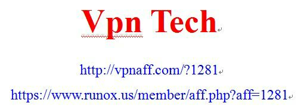

Conversation with 81184027 at Wed 20 Aug 2014 02:02:39 PM CST on 154115835 (webqq)
(02:05:46 PM) 醒悟: 现在够黑的共产党最大的流氓
(02:00:50 PM) 醒悟: (#202830)有钱杀人没事的
(02:02:09 PM) 醒悟: (#202831)红米加强版没电信的!奶奶的
(02:02:54 PM) 小绵羊: (#202832)外国杀人有判几百年监禁的!可减刑吗?
(02:03:16 PM) 醒悟: (#202833)可以吧
(02:03:48 PM) 醒悟: (#202834)判三百年减二百年:face13:
(02:04:02 PM) 小绵羊: (#202835)中国最多判几十年?
(02:04:34 PM) 醒悟: (#202836)有钱卖出来就行了
(02:05:46 PM) 醒悟: (#202837)现在够黑的共产党最大的流氓
(02:05:46 PM) 醒悟: 现在够黑的共产党最大的流氓
(02:00:50 PM) 醒悟: (#202830)有钱杀人没事的
(02:02:09 PM) 醒悟: (#202831)红米加强版没电信的!奶奶的
(02:02:54 PM) 小绵羊: (#202832)外国杀人有判几百年监禁的!可减刑吗?
(02:03:16 PM) 醒悟: (#202833)可以吧
(02:03:48 PM) 醒悟: (#202834)判三百年减二百年:face13:
(02:04:02 PM) 小绵羊: (#202835)中国最多判几十年?
(02:04:34 PM) 醒悟: (#202836)有钱卖出来就行了
(02:05:46 PM) 醒悟: (#202837)现在够黑的共产党最大的流氓
(02:06:23 PM) 醒悟: 黑老大
(02:07:47 PM) 小绵羊: 外国，—些欧美国家，性自由真的像电影说的一样吗?只要双方自愿，任何两个人或三，四个人都可自由Make L0Ve?
(02:08:29 PM) 醒悟: 可以啊管别人屁事
(02:08:59 PM) 小绵羊: 不论身份，职位，血缘，等关系
(02:09:26 PM) 醒悟: 看毛片就知道了，犯罪的话怎么拍群交
(02:09:31 PM) 小绵羊: 中国却不行!
(02:10:02 PM) 醒悟: 也行党行你不行:face13:
(02:10:25 PM) 小绵羊: 受道德法律管核!
(02:10:57 PM) 小绵羊: 共产党员才行!
(02:11:09 PM) 醒悟: 道德以亡，法律冶平民的
(02:12:05 PM) 醒悟: 现在有几个 处女?成年人
(02:12:29 PM) 醒悟: 快比妓女少了:face13:
(02:12:42 PM) 小绵羊: 未婚先性!
(02:14:37 PM) 小绵羊: 中国或许会步入女人作威作福的时代!
(02:15:11 PM) 小绵羊: 搞不好，性病泛滥!
(02:17:07 PM) 小绵羊: 党员乱性只是个人生活不捡点，道德问题1
(02:19:26 PM) 小绵羊: 广州，今天8月20日，全天有雨!
(02:29:15 PM) 福建-福州&水浒: 中国人是人贱，物贵，资本主义国家是，人贵，物贱～～～～典型的反人类
(02:27:27 PM) 光: 揭秘政府绿化腐败：超级银杏出厂价几千落地5万
发布时间： 2014-08-20 07:11:10 | 来源： 中国经济网 | 作者： | 责任编辑：
一棵“超级银杏”，出厂价几千元，落地价却达5万元，巨额差价去哪了？动辄花上千万找知名公司进行绿化设计，其实就是几个刚毕业的学生参照以往案例稍加改动，巨额设计费背后有哪些猫腻？
记者调查发现，在一些地方频现绿化奢侈浪费的背后，掩藏“黑色内幕”。
23米内27棵树“挤成一坨”
23米的路边绿化，种6棵乔木已然嫌挤，规划图纸却要求种下27棵，栽下去，树都堆成“一坨”。
一位从事园林绿化近30年的业内人士说，去年在山东某地参与城市绿化，规划要求栽树间隔不到1米，乍一看巨资打造生态园林城市立竿见影，但树太密，根本活不了，用不了一两年必须挖掉。他说，明知规划“不靠谱”，如果是私人项目还能提点建议，“给政府部门干活儿我们提都不敢提，提了不知道就伤到哪个领导了，活儿都没了。”业内人士说，这种急功近利、好大喜功，不仅是政绩观作祟，背后还有“黑色的腐败经济账”。
业内人士透露：“2013年，我们给某地的新区整体绿化做规划设计，施工总面积130万平方米，绿化施工总招标金额1.3亿元，设计费每平方米15元，加起来近2000万元”，其中很大一部分用在上下打点和给有关部门人员的回扣上，这是“潜规则”。
“收了2000万，设计却没请‘大腕’，几个刚毕业的学生参照以往案例稍加改动，设计成本只花了几十万。”这位设计公司负责人表示，对地方政府而言，比设计效果更重要的是设计公司的名气，所以花大价钱设计的城市不少，真正有特点的不多。
业内人士揭秘，规划设计“吹泡泡”是绿化浪费的根源和起点。
>>案例
2013年落马的广州市林业和园林局原党委书记郭清和被查出在园林绿化项目招标等方面大肆收受私人老板和下属干部贿赂共计200多万元，其下属副局长刘燕堂为他人所请托的承接工程项目施工、设计等事项提供“帮助”，并收受他人所送款项共计50多万元。
施工招标苗木采购是“腐点”
记者梳理发现，近3年来，有超过20宗林业园林系统官员腐败案，其中不乏多宗窝案，落马官员数十人。在官商勾结之下，领导吃招标设计“大头”，下属吃承包“小头”，中层干部则“下吃上送”，构成环环相扣的腐败链条，级别从普通科员到厅局级。施工招标和苗木采购是两大“腐点”。在园林绿化施工方面，“先上车、后补票”的情况并不鲜见。
不同的绿化树种，成本差异巨大，决策背后有不小的寻租空间。
一位业内人士回忆参与河北某地政府招标的绿化项目，“我们推荐用本地几百元一棵的杨树，政府却要求从南方引进胸径40厘米上下的‘超级银杏’，出厂成本就几千元，长途跋涉后，落地价1棵树5万元。”
>>案例
2010年广西防城港市绿化腐败案曝出，政府采购价10万元的大树，成本价只有2万元，其中巨大的差价被供应商和贪腐干部分食。
治绿化奢侈病只有透明公开
北京航空航天大学廉洁教育与研究中心教授任建明指出，贪大求洋、南树北种等愈演愈烈的“绿化奢侈病”脱离了园林绿化的本意，一些领导干部把园林绿化当成长袖善舞的工具，不仅造成浪费，还为腐败留下了空间。
中央巡视组点名批评的江西造林绿化“一大四小”工程，历时4载、耗资数百亿元，因为戴着“一号工程”的帽子，这场“脱离实际”“好大喜功”的工程得以强力推进；来自江苏、广西等地的银杏树，因为“档次高”、造型好被时任领导相中，而后如潮水般被采购进入重庆。至2010年，全市园林绿化投入178亿元，是前10年总和的2.7倍，此后不少银杏因为水土不服枯死。两地一把手落马，随之还有一批下属园林官员落入法网。
专家和业内人士认为，要从源头上遏止“园林绿化腐败”，透明公开和织密制度网才是防范妙药。据新华社电
(02:27:38 PM) 光: http://news.china.com.cn/rollnews/news/live/2014-08/20/content_28275988.htm?bsh_bid=476334928
(02:27:58 PM) 光: 情理法社会，透明的了么
(02:28:52 PM) 光: 哪个腐败背后不是党员带头搞
(02:29:13 PM) 光: 老百姓也想腐败，他有这个权利么？
(02:29:26 PM) lost message from #202861 to #202864
(02:32:33 PM) 福建-福州&水浒: 呵呵
(02:29:30 PM) 光: 2013年落马的广州市林业和园林局原党委书记郭清和被查出在园林绿化项目招标等方面大肆收受私人老板和下属干部贿赂共计200多万元，其下属副局长刘燕堂为他人所请托的承接工程项目施工、设计等事项提供“帮助”，并收受他人所送款项共计50多万元。
(02:34:26 PM) 福建-福州&水浒: 就是，皇帝不可怕，可怕的是皇帝身边的嫡系
(02:34:49 PM) 福建-福州&水浒: 近墨者黑就是这个道理
(02:31:51 PM) 光: 嗯
(02:35:16 PM) 福建-福州&水浒: 嗯
(02:35:14 PM) 光: (02:27:58 PM) 光: 情理法社会，透明的了么//背后是清水无虾的逻辑
(02:35:31 PM) 光: 透明就是要把水搞清
(02:35:45 PM) 光: 专家和业内人士认为，要从源头上遏止“园林绿化腐败”，透明公开和织密制度网才是防范妙药。据新华社电
(02:36:08 PM) 光: 透明公开是西方的思维模式
(02:36:12 PM) 光: 东方人做不到
(02:37:14 PM) 光: 因为他要挑战的是清水无虾这个东方人根深蒂固的思维模式
(02:39:16 PM) 光: 水浑了虾倒是有了
(02:39:25 PM) 光: 浑水摸鱼的也多了
(02:39:44 PM) 光: 腐败也就多了
(02:40:58 PM) 光: 中国人的聪明，到底是聪明还是愚蠢
(02:42:22 PM) 光: 专家和业内人士认为，要从源头上遏止“园林绿化腐败”，透明公开和织密制度网才是防范妙药//说了等于没说
(02:42:36 PM) 光: 言下之意，源头不变他们也没办法
(02:45:59 PM) Amitabha: 
(02:44:04 PM) 光: 这种专家的话慢慢久了都成套话了
(02:44:22 PM) 光: 什么问题都是源头上抑制腐败
(02:44:31 PM) 光: 找源头啊
(02:44:36 PM) 光: 源头就是中国文化
(02:44:57 PM) 光: 中国式思维方式
(02:45:11 PM) 光: 改变不了，说了等于没说
(03:09:26 PM) 小绵羊: 源头就是"不管是谁，职位多高，有腐必查，"却不敢说"有腐必死!"
(03:12:08 PM) 小绵羊: 源头就是中共(至高层)!毕竞他们也从最小做起，从小到大，连—点礼都没收过的，没送过的，绝对找不出—个中共领导来!
(03:12:14 PM) 小绵羊: :D
(03:14:39 PM) 小绵羊: 上梁不正，下梁歪!身正不怕影斜(邪)!
(03:17:11 PM) 小绵羊: "灭火队长"王，我担心他会被软禁或暗杀!
(03:14:09 PM) 光: 在中国不懂人情，是混不好的
(03:14:14 PM) 光: 人情世故
(03:14:18 PM) 光: 老人看得很重
(03:14:30 PM) 光: 一个人太聪明不懂人情世故
(03:14:39 PM) 光: 老人就会说你锋芒太露了
(03:14:46 PM) 光: 早晚吃苦头
(03:15:09 PM) 光: 在中国这样的社会模式虾
(03:15:11 PM) 光: 下
(03:15:15 PM) 光: 求生存是第一的
(03:15:28 PM) 光: 而懂人情世故更多是一种生存方式
(03:15:40 PM) 光: 肯定有人觉得这样不好
(03:15:44 PM) 光: 但是人人都这样
(03:18:54 PM) 小绵羊: 外国人到中国做生意如果不懂人情则倒闭!
(03:15:55 PM) 光: 你不这样，就不容易生存
(03:16:02 PM) 光: 对头
(03:16:21 PM) 光: 中国社会麻将味道很重
(03:16:48 PM) 光: 或者存在就是合理
(03:17:09 PM) 光: 中国人就以这样的形式继续发展下去吧
(03:17:19 PM) 光: 不管什么文化进来
(03:17:24 PM) 光: 最后都被中国化了
(03:17:27 PM) 光: 麻将化了
(03:21:40 PM) 小绵羊: 存在就是合理，多数人认为的就是真理!这就是中国式!:)
(03:18:37 PM) 光: (03:15:15 PM) 光: 求生存是第一的
(03:15:28 PM) 光: 而懂人情世故更多是一种生存方式//你懂人情世故，你就能更好的生存
(03:18:46 PM) 光: 中国经
(03:19:14 PM) 光: 中国是中庸
(03:22:30 PM) 小绵羊: 中国经!:胜利:
(03:19:26 PM) 光: 不是最优者胜利
(03:19:35 PM) 光: 而是最中庸者胜利
(03:20:02 PM) 光: 去头，去尾留中
(03:20:38 PM) 光: 所以中国不可能有什么好的诺贝尔奖获得者
(03:20:45 PM) 光: 文化培养不出这样的人
(03:20:48 PM) 光: 头被砍掉了
(03:21:02 PM) 光: 也不会颓废的非洲那种地步
(03:24:15 PM) 小绵羊: 皇帝不好，平民不好，大臣最好!—人之下，万人之上!
(03:24:15 PM) 醒悟: 也许以后会改变，农村人进城打工思想也会城市化!现在开放了西方思想也会带入中国比如性开放:D
(03:21:09 PM) 光: 尾巴也被砍掉了
(03:21:28 PM) 光: 有麻将的地方
(03:21:32 PM) 光: 就有中国文化
(03:21:47 PM) 光: 中国文化是深入骨髓的
(03:25:52 PM) 醒悟: 一代人死了淡一点几代人死了就没了时间问题
(03:23:01 PM) 光: 文化这种东西
(03:23:07 PM) 光: 是你看不到的
(03:26:15 PM) 小绵羊: 没人进城打工了，估计，中共也活到头了!
(03:23:18 PM) 光: 但是实实在在存在在各种细节中
(03:26:26 PM) 醒悟: 一代一代淡了
(03:24:13 PM) 光: 几百年
(03:24:16 PM) 光: 或者几千年
(03:28:03 PM) 醒悟: 70后80后90后差距多大!以前没开放千年不变
(03:28:04 PM) 小绵羊: 根深蒂固!
(03:25:05 PM) 光: 当有形的国界淡化之后
(03:25:11 PM) 光: 或许多文化融合
(03:25:16 PM) 光: 会有新的变异
(03:28:53 PM) 醒悟: 在变变的很快
(03:26:11 PM) 光: 中国的这个文化，从刘项之争就体现出来了
(03:26:30 PM) 光: 刘邦相比项羽没有什么优势的
(03:29:43 PM) 小绵羊: 个体在变，总的思想没变!
(03:26:37 PM) 光: 个体上看
(03:26:50 PM) 光: 但是刘邦会用人
(03:27:00 PM) 光: 集体胜过个体
(03:27:08 PM) 光: 从那之后
(03:27:19 PM) 光: 我们就一直都是这样的
(03:27:30 PM) 光: 如果项羽胜过刘邦
(03:27:32 PM) 光: 我们的文化
(03:27:39 PM) 光: 会和美国和西方差不多
(03:27:56 PM) 光: 个人英雄主义
(03:31:07 PM) 小绵羊: 怎讲说?
(03:31:07 PM) 醒悟: 讲手段不讲实力
(03:28:26 PM) 光: 刘邦和项羽是两种特点的人
(03:28:53 PM) 光: 事实上我们几千年来都是非常推崇刘邦这样的人
(03:28:58 PM) 光: 而否定项羽这样的人
(03:32:34 PM) 小绵羊: ?
(03:29:34 PM) 光: 这种思想在我们民族很深了
(03:32:59 PM) 醒悟: 成王
(03:33:04 PM) 小绵羊: 人追求什么?
(03:33:25 PM) 小绵羊: 成王?
(03:33:51 PM) 醒悟: 谁成功了谁王
(03:33:54 PM) 小绵羊: 成头?成龙?成凤?
(03:31:28 PM) 光: 如果我们文化中还保持项羽的霸气在
(03:31:38 PM) 光: 我们就不可能是中庸文化做主导的
(03:35:48 PM) 小绵羊: 怪不得学校培养人一级—级往上爬，学到中央党校就当人大领导!
(03:34:48 PM) 光: 中国从来不是什么先进文化
(03:34:55 PM) 光: 只是稳定文化
(03:36:02 PM) 光: 邻族稍微有一些方面强过你
(03:39:19 PM) 小绵羊: 我记忆中，近代中国没啥名人!
(03:36:14 PM) 光: 就可以来战胜你，或者征服你
(03:36:37 PM) 光: 然后我们用我们的中庸文化
(03:36:46 PM) 光: 去慢慢的同化他们
(03:36:49 PM) 光: 弱化他们
(03:37:25 PM) 光: 你就看元 和清 这些外族统治中国的时期
(03:37:46 PM) 光: 从彪悍到和我们差不多一样懦弱
(03:40:56 PM) 小绵羊: 中国人不喜爱诺贝尔吗?
(03:38:05 PM) 光: 都是这样恶
(03:38:19 PM) 光: 中国人考虑生存的问题多
(03:38:44 PM) 光: 最大的问题是吃饭
(03:38:52 PM) 光: 有饭吃很重要
(03:42:03 PM) 小绵羊: 考虑自己!不理别人!
(03:39:49 PM) 光: 诺贝尔这个对大多数人看来是吃饱了撑得问题
(03:40:06 PM) 光: 民以食为天
(03:43:15 PM) 小绵羊: :)
(03:40:29 PM) 光: 除了影响到吃饭的问题都不是大问题
(03:43:42 PM) 小绵羊: 吃饱了撑着!
(03:41:50 PM) 光: 嗯
(03:42:20 PM) 光: 同理对于大多数人来说如果没有什么信仰上的原因，公益是吃饱了撑得才会去做的事情
(03:45:41 PM) 小绵羊: 把自己的钱拿去设奖给别人!他(诺贝尔)吃饱了撑着?!